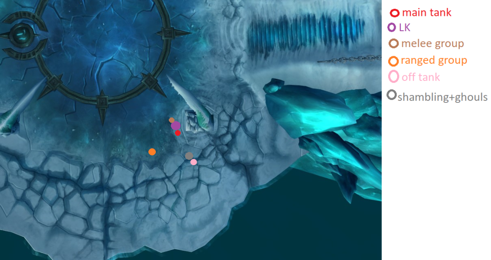
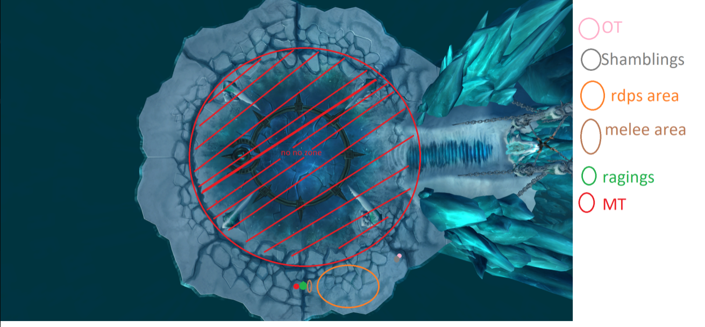
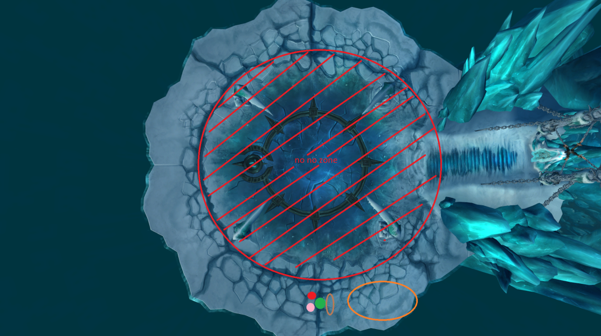
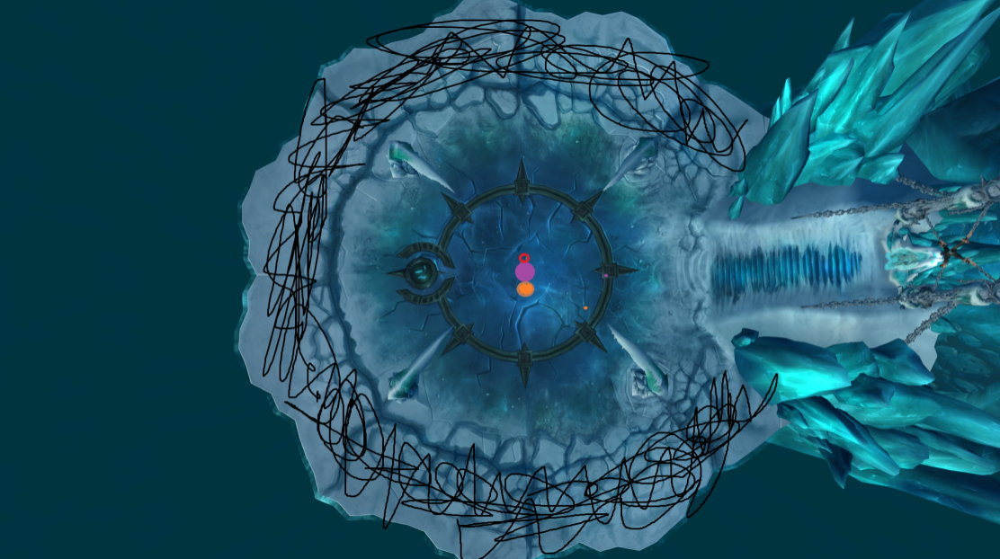
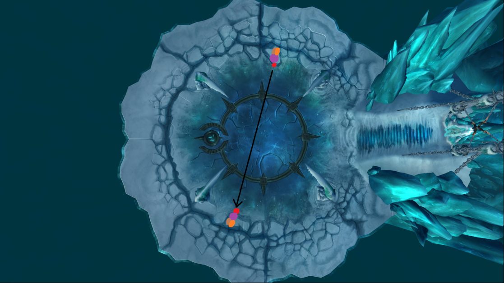

El Fucking Rey Exánime
Tiene 3 fases y 2 fases de transición.
Habilidades:
Fase 1:
- Infestar
- Invocar necrófagos (Summon Ghouls)
- Invocar Horror Espantoso (Summon Shambling Horror)
- Enfurecer (Enrage)
- Onda de choque (Shockwave)
- Peste Necrótica (Necrotic Plague)
Transiciones:
- Invierno Implacable (Remorseless Winter)
- Dolor y Sufrimiento (Pain and Suffering)
- Esfera de Hielo (Ice Sphere)
- Espíritu Furioso (Raging Spirit)
- Grito del Alma (Soul Shriek)
- Sacudida (Quake)
Fase 2 (P2):
- Infest
- Segador de Almas (Soul Reaper)
- Val’kyrs
- Profanar (Defile)
Fase 3 (P3):
- Profanar (Defile)
- Segador de Almas (Soul Reaper)
- Cosechar Alma (Harvest Soul)
- Espíritus Viles (Vile Spirits)
Fase 1: Posicionamientos

Inicialmente, el Off Tank estará en el mismo lugar que el grupo cuerpo a cuerpo. Después de la primera oleada de necrófagos, el Off Tank tratará de ganar agro de tantos como sea posible y luego se moverá a su posición asignada.
El Rey Exánime comienza ganando agro en la base de las escaleras, por lo que el tanque principal debe provocarlo, junto con cazadores y pícaros usando Misdirection (MD) y Tricks of the Trade (ToT). Si eres un DK, puedes usar Muerte y Descomposición 10 segundos antes de iniciar el combate para ganar más agro.
Habilidades de P1:
Infest
Esta es la primera habilidad que lanza LK. Aplica un DoT a todos en la banda que solo desaparece si el objetivo tiene la vida al máximo.
Dado que es una habilidad canalizada, los sanadores deben preverlo y curar anticipadamente.
- Los sacerdotes disciplina deben usar escudos preventivamente (Power Word: Shield) en toda la banda antes de cada Infest. Este es su trabajo principal en P1 y P2.
- Dado que el primer Infest llega muy pronto, los sacerdotes deben empezar a escudar antes del combate, aproximadamente 18 segundos antes.
- Si hay un druida restauración, usar HoTs previamente también ayuda.
Invocar Necrófagos
LK invocará 3 necrófagos durante P1.
No los ataques inmediatamente, el Off Tank debe ganar agro.
Después de la primera oleada, puedes atacarlos con cleaves.
Invocar Horror Espantoso
Esto es un vargul. El Off Tank debe recogerlo de inmediato y posicionarlo de espaldas al grupo de rango y cuerpo a cuerpo.
- Onda de choque: Es una habilidad que puede matar de un golpe a cualquier DPS, razón por la cual debes posicionarlo de espaldas al grupo.
- Enfurecer: Incrementa su daño un 200%, lo que pone en peligro al Off Tank. Esto debe ser disipado inmediatamente por un cazador con Disparo Tranquilizante (Tranquilizing Shot).
Macro para Disparo Tranquilizante:
/stopcasting
/cast [@mouseover] Tranquilizing Shot
Fase 1: Uso de Disparo Tranquilizante
- Utiliza un macro de mouseover para aplicar Disparo Tranquilizante a los Shamblings cuando se enfurezcan.
- El tiempo entre enfurecimientos es suficiente para que el Disparo Tranquilizante esté listo nuevamente.
- Antes de la primera transición, solo deberían aparecer 2 Shamblings:
- El segundo Shambling debe ser recogido rápidamente por el tanque secundario (OT). Si aparece en una posición incómoda (ej. detrás de un pilar), un cazador debería usar Redirección (MD) hacia el OT.
- Los DPS cuerpo a cuerpo deben tener cuidado si el Shambling aparece cerca del jefe para evitar cleaves.
Enfurecimiento (Enrage)
- Cuando haya dos Shamblings, habrá dos enfurecimientos casi consecutivos (4-6 segundos de diferencia).
- Aplica Disparo Tranquilizante al primero.
- El OT debe aturdir al segundo para ganar tiempo y luego aplicar Disparo Tranquilizante.
Nota:
- El primer enfurecimiento de cada Shambling no aparecerá en DBM. Deben estar atentos a cuando el Shambling se vuelva grande y rojo. Los siguientes enfurecimientos sí tendrán un temporizador.
Plaga Necrótica
Mecánica:
- Debuff que afecta a un jugador:
- Inflige 50k de daño tras 5 segundos.
- Si el debuff expira o el jugador muere, se acumula y salta a una unidad cercana (10 yardas).
- Cada salto aumenta un 2% el daño de ataque de LK.
Estrategia:
- Si tienes Plaga Necrótica:
- Corre hacia el OT.
- Evita posicionarte frente al Shambling para no recibir el Shockwave.
- Los healers deben disipar rápidamente:
- Si el debuff salta al Shambling, un ghoul o el OT, estará bien posicionado.
- Si salta al OT, debe disiparse inmediatamente o pedir ayuda.
- Control de Ghouls:
- El OT debe mantener 4 ghouls como máximo. Esto permite que la plaga salte entre los ghouls y el Shambling para acumularse.
- Tener demasiados ghouls reduce la probabilidad de que la plaga salte a los Shamblings, lo que alarga la fase de transición.
Primera Transición (70% HP)
Habilidad principal:
- Invierno Implacable (Remorseless Winter):
- LK lanza esta habilidad desde el centro de la arena.
- Todos deben moverse al borde para evitar el área de daño.
Posicionamiento:

-
Antes de eliminar Shamblings y Ghouls:
- Apilarse estratégicamente para maximizar DPS y control.
- Evitar recibir golpes frontales.
-
Después de eliminarlos:

- OT debe posicionarse lejos del grupo para disiparse.
Raging Spirits:
- Aparecen sobre jugadores aleatorios, aturdiéndolos brevemente.
- Estos adds pueden matar a los DPS rápidamente. Se recomienda:
- Usar Redirección (MD) y Trucos del comercio (ToT) según el orden establecido.
- En 25-man, asignar un cazador y un pícaro para cada Raging Spirit.
- En 10-man, un cazador o pícaro debería manejar el 1º y 3º Spirit en la primera transición, y el 2º y 4º en la segunda.
- Frontal AoE - Soul Shriek:
- Mantén los Raging Spirits alejados del grupo.
- Los tanques deben recibir el daño frontal, y los healers disipar el silencio.
Daños y Control en Transición:
-
Dolor y Sufrimiento (Pain and Suffering):
- Afecta a jugadores aleatorios y aplica un debuff acumulativo que aumenta el daño recibido.
- Los DPS y healers deben esparcirse para minimizar los efectos.
-
Esferas de Hielo (Ice Spheres):
- Las orbes se generan y se dirigen a jugadores aleatorios.
- Si impactan, empujan fuera de la plataforma, causando muerte instantánea.
- Asignar DPS a distancia (ej. Sacerdotes Sombras) para ralentizar y destruir las orbes antes de que lleguen al grupo.
-
DPS al LK:
- Durante esta fase, solo los magos deberían dañar al jefe debido a su mayor alcance.
- Los magos deben tener cuidado con el aggro; se recomienda usar Intervenir (Warriors) y Salvación (Paladines).
Fin de la Transición:
- La transición dura 1 minuto. Después, comienza la Fase 2.
FASE 2
Tan pronto como comience la Fase 2, la plataforma en la que estabas se colapsará. La banda debe moverse a la plataforma principal para continuar la pelea.
Posicionamiento
- El tanque principal (MT) lleva al Rey Exánime (LK) al centro de la plataforma.
- El off-tank (OT) se encargará del Espíritu Furioso restante. Espera a que lance Grito de Alma antes de reposicionarlo hacia el centro, pero manteniéndolo de espaldas al grupo para evitar silencias en área.
- Después de que el Espíritu Furioso muera, el OT se agrupa con los DPS principales y los sanadores para las mecánicas de Val'kyr y Profanar.

Habilidades en la Fase 2
1. Infestar
- Funciona igual que en la Fase 1:
- Los DISCOS!!! deben pre-lanzar escudos y pre-lanzar sanaciones en el tiempo (ÁRBOLES) para mitigar el daño.
- Asegúrate de que la salud de todos esté completa para eliminar el efecto de daño prolongado (DoT).
2. Val'kyrs
-
Normal de 10 jugadores: Aparece 1 Val'kyr.
-
Normal de 25 jugadores: Aparecen 3 Val'kyrs y seleccionan miembros de la banda al azar.
-
Las Val'kyrs agarran a un jugador e intentan lanzarlo fuera de la plataforma. Este jugador no puede actuar mientras está atrapado.
-
Posicionamiento para Val'kyrs:
- Todos los jugadores (excepto Brujos) deben apilarse juntos para garantizar que las Val'kyrs aparezcan juntas y puedan ser golpeadas con habilidades de área.
- Si las Val'kyrs no están juntas, se moverán en diferentes direcciones, reduciendo la eficiencia del DPS.
-
Ralentizar y aturdir a las Val'kyrs:
- Usa Trampas de Escarcha, Cono de Frío, Tifón y Aullido Perforador para ralentizarlas.
- Usa Martillo de Justicia y Cólera Sagrada en rotación para aturdirlas. Sigue un orden planificado para evitar rendimientos decrecientes.
- No uses aturdimientos a menos que estés asignado.
-
¡¡Caso especial!! : Si un Brujo es atrapado, ignora a esa Val'kyr. El Brujo puede teletransportarse de regreso usando su Círculo Demoníaco.
3. Segador de Almas
- LK apunta al MT con esta habilidad devastadora para tanques.
- Golpe inicial: Inflige 50% de daño con arma.
- Perjuicio: Después de 5 segundos, inflige un gran daño de Sombra y otorga al LK un 50% de velocidad de ataque aumentada.
- Los tanques deben tener una rotación de habilidades defensivas para mitigar el daño:
- Usa Mano de Sacrificio u otros enfriamientos externos.
- Los tanques deben avisar cuándo necesitan mitigación para garantizar la supervivencia.
4. Profanar
Finalizando la Fase 2
- El equilibrio entre apilarse (para Val'kyrs) y dispersarse (para Profanar) continúa hasta que el LK alcance el 40% de vida.
- En este punto, comienza la segunda Fase de Transición.
Segunda Fase de Transición
Mecánicas clave:
- Idéntica a la primera transición, pero con un Espíritu Furioso adicional (4 en total).
Posicionamiento:
- Dispérsense alrededor del anillo exterior para evitar la superposición de Dolor y Sufrimiento y otras mecánicas.
- Asignaciones de tanques:
- El MT toma los dos primeros Espíritus Furiosos.
- El OT toma los dos últimos.
Estrategia:
- Usa Heroísmo/Ansia de Sangre cuando aparezcan los dos últimos Espíritus Furiosos.
- Usa todos los enfriamientos y DPS explosivo para eliminar los espíritus restantes antes de entrar en la Fase 3.
La fase termina después de 1 minuto, dando paso a la Fase 3. Es posible que dos Espíritus Furiosos sigan vivos al comenzar la Fase 3: prioriza matarlos de inmediato.
Fase 3
La plataforma externa colapsa, así que deben moverse hacia el centro nuevamente.
En esta fase no nos apilaremos en el medio, sino en los lados de la sala.
Los adds restantes (
Espíritus Furiosos) deben ser kiteados cerca del Lich King y eliminados lo más rápido posible.
Posicionamiento:

Esto es solo un ejemplo de cómo apilarse: pueden apilarse en múltiples puntos, pero lo importante es permanecer detrás del Lich King, estar apilados y posicionarse cerca del borde de la sala.
Todos se apilarán detrás del Lich King debido a una habilidad llamada Espíritus Viles.
- Espíritus Viles: Aparecen encima del Lich King y, después de un tiempo, seleccionarán a jugadores aleatorios como objetivo, descenderán y explotarán, haciendo aproximadamente el 80% del HP de un DPS en un radio relativamente amplio.
- Una vez que los espíritus aparezcan, el MT (Main Tank) y todos los demás deben moverse al otro lado de la sala. Esto se hace porque los espíritus se dirigen a jugadores aleatorios y, al moverse al otro lado, los espíritus se agruparán más. Esto es crucial, ya que facilita absorber el daño de los espíritus (Soaking).
Absorber daño de los Espíritus Viles:
Se necesitan jugadores designados para absorber el daño:
- Normalmente, dos Sacerdotes Sombras (Shadow Priests) pueden encargarse, alternando sus Dispersiones:
- Un Sacerdote absorbe una ola de espíritus, y el otro la siguiente.
- Si un Sacerdote no puede absorber o no hay dos Sacerdotes Sombras en la raid, otros pueden encargarse:
- Un Off Tank.
- Un Guerrero con Muro de Escudo.
- Un Druida feral en forma de oso con Piel de Corteza y Instintos de Supervivencia.
- Un Paladín con Protección Divina.
- Hay muchas opciones.
Consideraciones para otras clases:
- Los Cazadores (Hunters) pueden ignorar el apilamiento gracias a Fingir Muerte. Si un espíritu los selecciona, usen Fingir Muerte, y el espíritu se dirigirá hacia el grupo principal y se apilará con los demás.
- Cualquier DPS a distancia técnicamente puede ignorar el apilamiento, ya que pueden sobrevivir a una explosión de un espíritu, pero ser golpeado por dos significa la muerte, así que tengan cuidado.
Otras habilidades importantes en la Fase 3:
Profanar:
- Igual que en la Fase 2: dispersarse.
- No hay Val'kyrs en esta fase, lo que facilita el movimiento para evitar Profanar.
Segador de Almas:
- Igual que en la Fase 2: los tanques deben tener una rotación de habilidades defensivas para sobrevivir al daño.
Cosechar Alma:
El Lich King comienza a absorber el alma de un jugador hacia su espada, aplicando un debuff a esa persona. Este debuff causa más del 100% del HP del objetivo, así que deben curarlos o morirán.
Dentro de Frostmourne:
- Después de ser absorbido, serás transportado dentro de Frostmourne, donde habrá dos NPCs:
- Guardián Espiritual (enemigo).
- Terenas Menethil (aliado).
-
Eliminación del Guardián Espiritual:
- Terenas hace suficiente daño para matarlo, pero debes interrumpir su habilidad Destruir Alma, que matará a Terenas si el lanzamiento se completa.
- Si no tienes un interrupt, puedes disipar a Terenas para eliminar el efecto.
-
Curar a Terenas:
- Si el Guardián Espiritual no muere rápidamente, cúralo para que no fallezca.
- Si Terenas muere, tú también morirás, y el Lich King se enfurecerá fuera de Frostmourne, causando muertes masivas.
-
Si el Guardián Espiritual muere, serás enviado de vuelta al exterior.
Final del combate:
Cuando el Lich King llega al 10% de vida, lanzará Furia de Frostmourne, lo que matará a todos, finalizando el combate.
Después de un poco de roleplay, podrás resucitar y derrotar al Lich King.